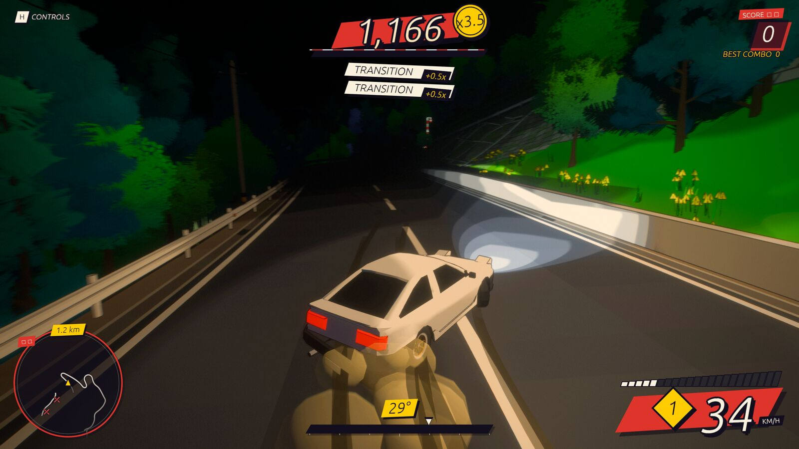
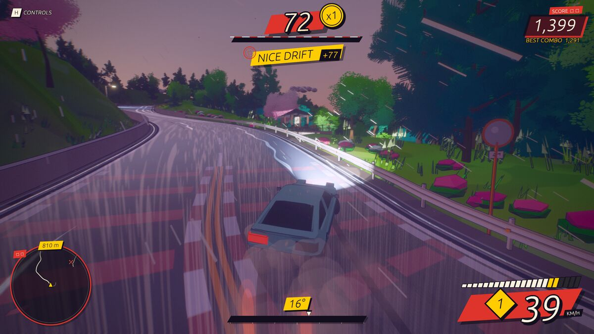
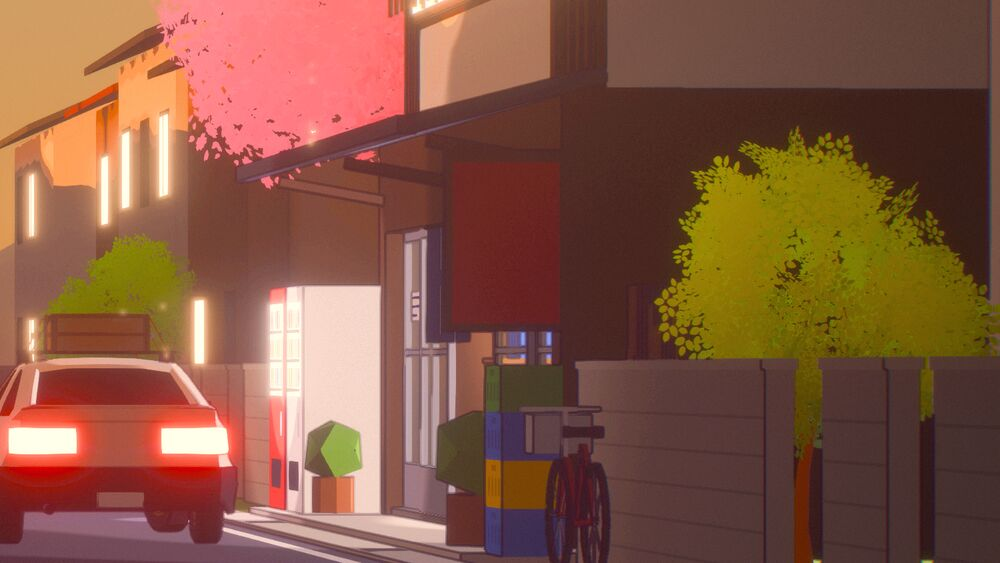
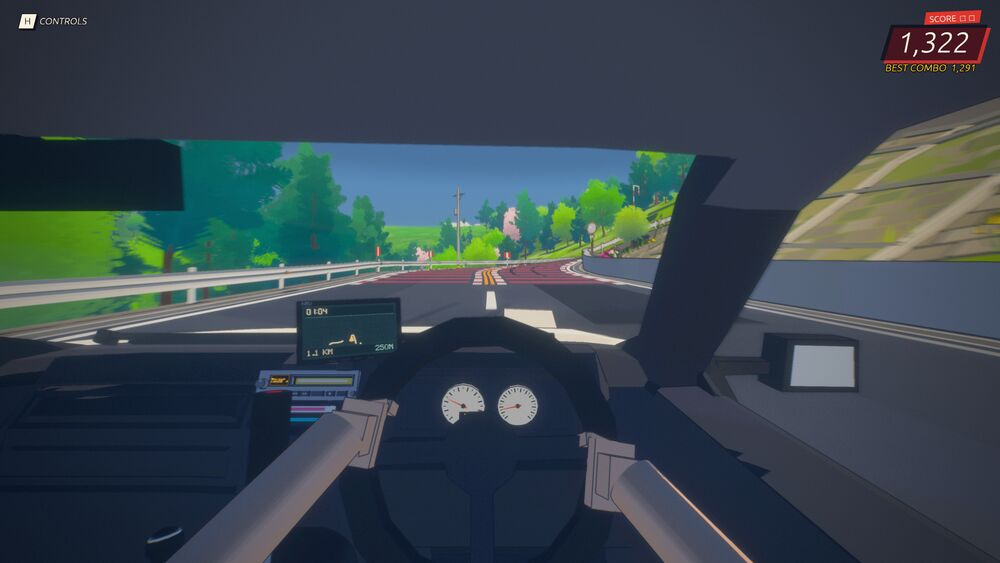
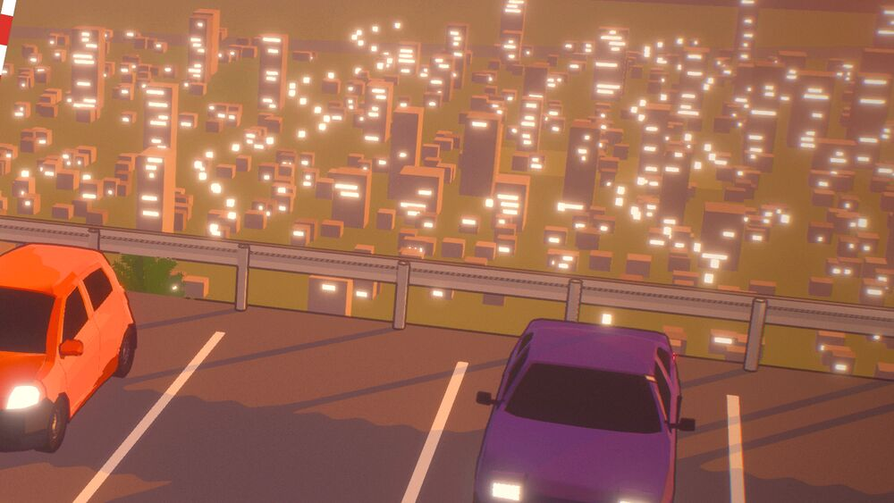
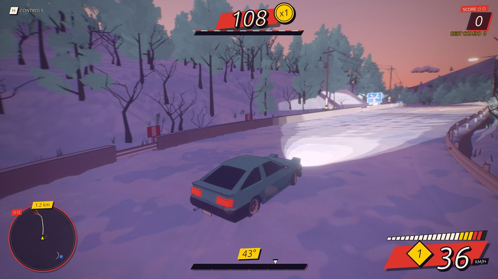
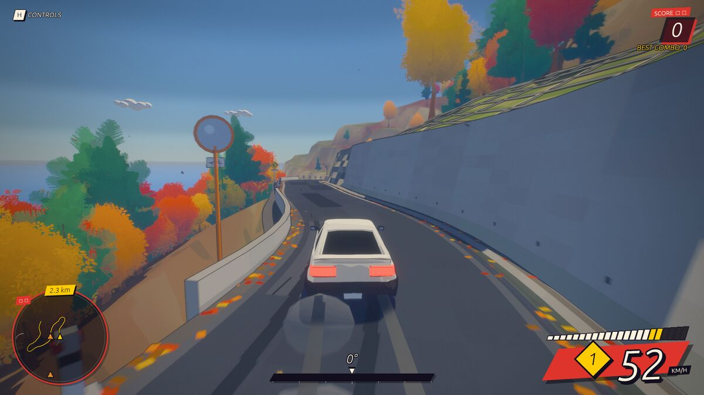

Mountain pass · Tofu shop · Est. 1998
A cel-shaded touge drift game. Deliver tofu down the pass before dawn, with a glass of water on the dash. Spill it and the tofu's ruined.
Every pass is generated from a seed: hairpins, tunnels, rail crossings, sakura and rock sheds. Then the weather and the hour change how it drives.







Where's My Tofu!? is coming to Steam. Wishlist it and you'll hear the day the shop opens.
WISHLIST ON STEAM